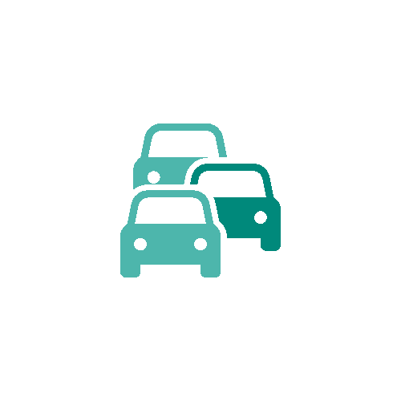

Contacta con otros universitarios que vivan cerca tuyo y vayan a uno de
los campus de Tafira, Obelisco, San Cristóbal o Montaña Cardones.
Ayuda a reducir el impacto del C02 en el medio ambiente.

Reduce el tráfico en las horas puntas en la ciudad usando UniCar.